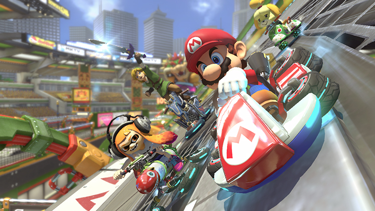
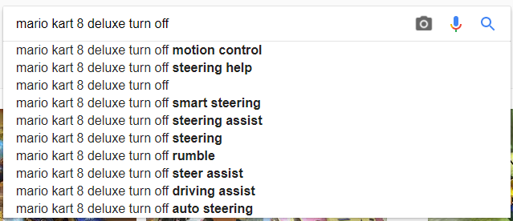
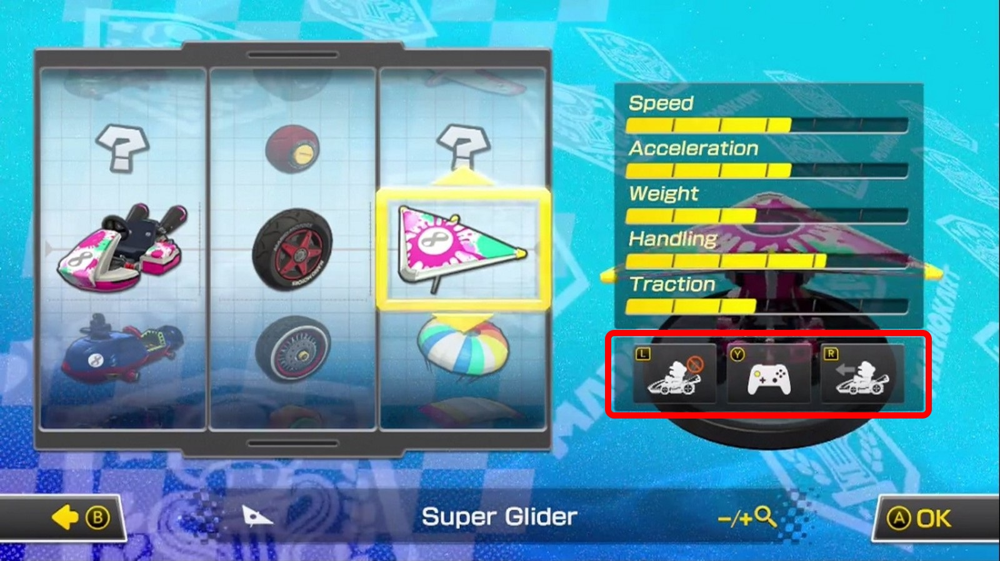

An underrated feature in Mario Kart 8 Deluxe
I recently became the owner of a Nintendo Switch and with it, Mario Kart 8 Deluxe.

Having played a bunch of Mario kart games in the past, I knew the basic mechanics of the game such as using the items you find and drifting through turns to gain boost. It was around the fourth or so race that my spidey-sense tingled enough for me to look into it. I had noticed the karts felt a little bit floaty when steering and not always do the exact thing I wanted them to do.
The big whoa moment came when I tried to take a shortcut I noticed in one of the tracks and when I tried to steer into it on the next lap it outright refused to do so! Baffled at the sight of my kart doing a 90 degree turn at the entrance of the shortcut and following the "correct" path I had to look online to find out more. (The game does not come with a manual - and if it did... who reads those anyway)
It turns out Mario kart has an assisted racing mode! Which... can .. do .. most of the .. racing for you ... And it wasn't all to obvious how to turn those of.

Google will of course tell you how, but if you ended up here, look no further:
When selecting a kart before starting a race, press the + button on the Switch. This will open a stats menu for your kart. Below that menu are three icons depicting each of the available assists you can use.

The L button controls steering assist, R controls throttle assist (turn on both for a self-driving kart) and Y let's you enable or disable the motion controls.
I turned the features off and was on my way without the training wheels. The value of these assistants came when I let one of my kids play the game. They know how the game works at a very basic level because I let them play the Wii version of Mario kart plenty of times before, the only problem they had on the Wii was running off the track a lot (my 5 year old got better at it pretty quickly, but my 3 year old just wants to pretend he's driving an actual car).
When I let him play Mario kart on the Switch, all I do is turn on the steering assist to keep him on the course and let him have fun with it. It's the best thing I've seen in games in quite a long time and makes it highly accessible to all skill levels, even the very very low skill levels like my 3 yr old (it also works great for the older generation, but don't tell em the secret! :^) As long as the accelerator is down most of the time the game will keep you in or near the pack of other karts so you can have some fun with the items while not having to worry about steering. My kiddo is none the wiser as he can race around without interruption of driving into pits and off cliffs and I don't have to explain why he needs to stay on the course if he wants to keep driving. Winners all around!
Thanks Nintendo!